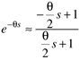
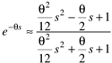
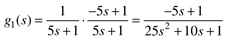
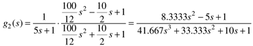
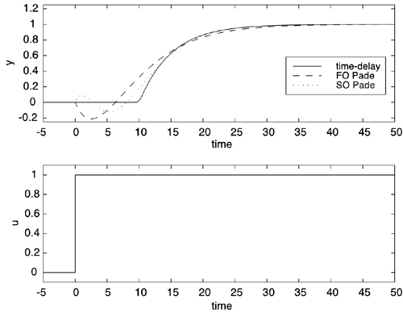

| [ Team LiB ] |
|
3.11 Padé Approximation for Dead TimeAs discussed in the previous section the transfer function for a pure time delay is e–qs, where q is the time delay. Some control system design techniques require a rational transfer function; the Padé approximation for dead time is often used in this case. A first-order Padé approximation is  A second-order Padé approximation is  Example 3.8: Application of the Padé Approximations for Dead TimeConsider the first-order + dead time transfer function, where the time-delay dominates the time constant
The first-order Padé approximation yields the transfer function  and the second-order Padé approximation yields  A comparison of the step responses of g(s), g1(s), and g2(s) is shown in Figure 3-16. Notice that the first-order approximation has an inverse response, while the second-order approximation has a "double inverse response." The reader should find that there is a single positive zero for g1(s), and there are two positive, complex-conjugate zeros of the numerator transfer function of g2(s). Figure 3-16. Comparison of first-order + dead time response with first and second-order Padé approximations for dead time. Most ordinary differential equation numerical integrators require pure differential equations (with no time delays). If you have a system of differential equations that has time delays, the Padé approximation can be used to convert them to delay-free differential equations, which can then be numerically integrated. One of the many advantages to using SIMULINK is that time delays are easily handled so that no approximation is required. |
| [ Team LiB ] |
|